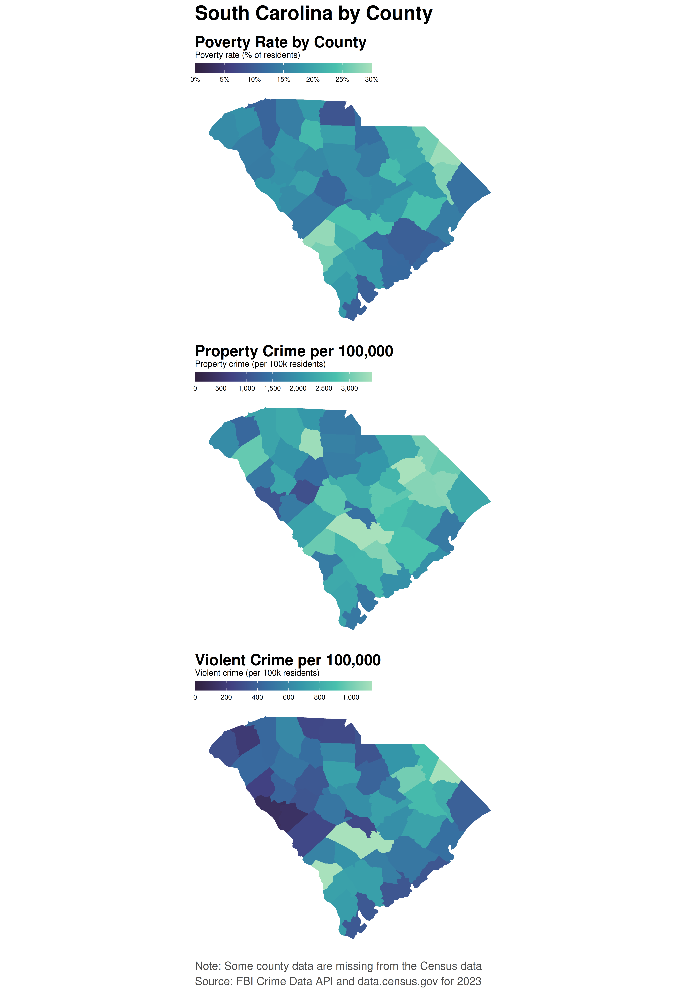

# See renv.lock
library(ggplot2)
library(dplyr)
# library(sf)
library(maps)
# library(stringr)
library(tidyr)
library(tidyverse)
library(mapproj)
library(patchwork)
library(scales)
library(plotly)
##################################
# Data Sources
##################################
state <- read.csv("data/crime_plus_poverty_2023.csv")
county <- read.csv("data/crime_poverty_by_county_2023.csv", check.names = FALSE)
##################################
# Data Cleaning
##################################
# Droping rows where census data was not available for 2023 source county data
if ("no_population" %in% names(county)) {
county <- county %>% dplyr::filter(no_population != "true")
}
county <- county %>%
mutate(
poverty_rate = as.numeric(poverty_rate),
property_crime_per_100k = as.numeric(property_crime_per_100k),
violent_crime_per_100k = as.numeric(violent_crime_per_100k)
)
##################################
# Useful functions & Vars
##################################
county_metric_cols <- c("poverty_rate",
"property_crime_per_100k",
"violent_crime_per_100k")
# Create geometries for mapping
us_counties <- ggplot2::map_data("county") # long/lat + region (state), subregion (county)
county_key <- maps::county.fips %>% mutate(polyname = str_to_lower(polyname))
counties_poly <- us_counties %>%
mutate(polyname = paste(region, subregion, sep = ",")) %>%
left_join(county_key, by = "polyname") %>%
rename(fips = fips) %>%
filter(!is.na(fips))
# Function for creating maps
build_county_map <- function(data) {
ggplot(data, aes(long, lat, group = group)) +
geom_polygon(color = "gray85", linewidth = 0.1, na.rm = TRUE) +
coord_quickmap() +
theme_void(base_size = 12) +
theme(
legend.position = "bottom",
plot.title = element_text(face = "bold", size = 16),
plot.margin = margin(4, 8, 4, 8)
)
}
# Helper to compute sensible upper limits (95th percentile) for crime and poverty rates
p95 <- function(x) {
x <- x[is.finite(x)]
if (!length(x)) return(NA_real_)
as.numeric(quantile(x, 0.95, na.rm = TRUE))
}
# Derive county FIPS given a data frame
# Uses: fips OR state+county codes OR state_abbr+county name
derive_fips <- function(df, county_key = NULL, keep_unmatched = FALSE) {
stopifnot(is.data.frame(df))
finish <- function(out) invisible(if (keep_unmatched) out else dplyr::filter(out, !is.na(.data$fips)))
# county crosswalk (polyname = "state,county" lowercase)
if (is.null(county_key)) {
county_key <- maps::county.fips |>
dplyr::mutate(polyname = stringr::str_to_lower(polyname))
}
# Already has FIPS
if ("fips" %in% names(df)) {
out <- dplyr::mutate(df, fips = stringr::str_pad(as.character(.data$fips), 5, "0"))
return(finish(out))
}
# state + county numeric/string codes
if (all(c("state", "county") %in% names(df))) {
out <- dplyr::mutate(
df,
fips = paste0(
stringr::str_pad(as.character(.data$state), 2, "0"),
stringr::str_pad(as.character(.data$county), 3, "0")
)
)
return(finish(out))
}
# state_abbr + county name (match via polyname)
county_col <- c("county_name", "county")[c("county_name", "county") %in% names(df)][1]
if (!is.na(county_col) && "state_abbr" %in% names(df)) {
states_lookup <- tibble::tibble(
state_abbr = c(state.abb, "DC"),
state_name = c(state.name, "District of Columbia")
) |>
dplyr::mutate(state_name_lower = stringr::str_to_lower(state_name))
norm_county <- function(x) {
x |>
stringr::str_to_lower() |>
stringr::str_replace_all("\\s+(county|parish|borough|census area|municipality|city)$", "") |> # Regex to extract county name
stringr::str_replace_all("^st\\.?\\s", "saint ")
}
out <- df |>
dplyr::left_join(states_lookup, by = "state_abbr") |>
dplyr::mutate(polyname = paste(.data$state_name_lower, norm_county(.data[[county_col]]), sep = ",")) |>
dplyr::left_join(county_key, by = "polyname") # adds fips
return(finish(out))
}
stop("derive_fips(): need one of: 'fips'; 'state'+'county'; or 'state_abbr'+county name.")
}
# Horizontal colorbar that sits nicely under the main title
nice_colorbar <- function() {
guide_colorbar(
title.position = "top",
label.position = "bottom",
barwidth = unit(90, "mm"),
barheight = unit(5, "mm"),
ticks = FALSE
)
}
# Poverty ticks every 5 percentage points, capped to avoid clutter
poverty_breaks <- function(upper) {
upper <- min(upper, 0.40)
seq(0, upper, by = 0.05)
}
# Pretty numeric ticks up to the computed cap
pretty_breaks_to <- function(upper, n = 6) {
scales::pretty_breaks(n)(c(0, upper))
}
# A cooler palette without the bright yellow; trim extremes
palette_args <- list(option = "mako", begin = 0.15, end = 0.90)Crime And Poverty Redesign Project CODE
Loading Libs and data
Title To Explain Code
df <- county
df <- derive_fips(df)
# Join metrics to polygons
map_df <- counties_poly %>%
left_join(
df %>% select(fips, all_of(county_metric_cols)),
by = "fips"
)
# Limits for each metric - 95th percentile as the upper scale limit
lim_pov <- c(0, max(0.3, min(0.6, ceiling(p95(map_df$poverty_rate) * 10) / 10)))
lim_prop <- c(0, p95(map_df$property_crime_per_100k))
lim_viol <- c(0, p95(map_df$violent_crime_per_100k))
# poverty <- build_county_map(map_df) +
# geom_polygon(aes(fill = poverty_rate)) +
# scale_fill_viridis_c(
# labels = percent_format(accuracy = 1),
# limits = lim_pov, oob = scales::squish, na.value = "gray95"
# ) +
# labs(title = "Poverty Rate by County (share of population)", fill = "Poverty")
poverty <- build_county_map(map_df) +
geom_polygon(aes(fill = poverty_rate)) +
do.call(scale_fill_viridis_c, c(
palette_args,
list(
limits = lim_pov,
breaks = poverty_breaks(lim_pov[2]),
labels = scales::percent_format(accuracy = 1),
oob = scales::squish, na.value = "gray95",
name = "Poverty rate (% of residents)",
guide = nice_colorbar()
)
)) +
labs(title = "Poverty Rate by County") +
theme(
legend.position = "top",
plot.title.position = "plot",
legend.justification = "left",
legend.box.just = "left",
plot.title = element_text(size = 22, face = "bold")
)
property <- build_county_map(map_df) +
geom_polygon(aes(fill = property_crime_per_100k)) +
do.call(scale_fill_viridis_c, c(
palette_args,
list(
limits = lim_prop,
breaks = pretty_breaks_to(lim_prop[2], n = 6),
labels = scales::comma_format(accuracy = 1),
oob = scales::squish, na.value = "gray95",
name = "Property crime (per 100k residents)",
guide = nice_colorbar()
)
)) +
labs(title = "Property Crime per 100,000") +
theme(
legend.position = "top",
plot.title.position = "plot",
legend.justification = "left",
legend.box.just = "left",
plot.title = element_text(size = 22, face = "bold")
)
violent <- build_county_map(map_df) +
geom_polygon(aes(fill = violent_crime_per_100k)) +
do.call(scale_fill_viridis_c, c(
palette_args,
list(
limits = lim_viol,
breaks = pretty_breaks_to(lim_viol[2], n = 6),
labels = scales::comma_format(accuracy = 1),
oob = scales::squish, na.value = "gray95",
name = "Violent crime (per 100k residents)",
guide = nice_colorbar()
)
)) +
labs(title = "Violent Crime per 100,000") +
theme(
legend.position = "top",
plot.title.position = "plot",
legend.justification = "left",
legend.box.just = "left",
plot.title = element_text(size = 22, face = "bold")
)
# Stack each plot vertically
stack_us <-
(poverty / property / violent) &
theme(
plot.margin = margin(6, 10, 6, 10)
)
stack_us +
plot_annotation(
title = "Crime & Poverty by U.S. County",
caption = "Note: Some county data are missing from the Census data\nSource: FBI Crime Data API and data.census.gov for 2023",
theme = theme(
plot.title.position = "plot",
plot.title = element_text(size = 28, face = "bold", hjust = 0),
plot.caption.position = "plot",
plot.caption = element_text(size = 16, hjust = 0, colour = "grey30",
lineheight = 1.15, margin = margin(t = 10)),
plot.margin = margin(8, 12, 18, 12)
)
)
Title To Explain Code
df <- county
df <- derive_fips(df)
# Build South Carolina map data only
sc_poly <- counties_poly %>% filter(region == "south carolina")
sc_map <- sc_poly %>%
left_join(df %>% select(fips, all_of(county_metric_cols)), by = "fips")
lim_pov <- c(0, max(0.3, min(0.6, ceiling(p95(sc_map$poverty_rate) * 10) / 10)))
lim_prop <- c(0, {x <- p95(sc_map$property_crime_per_100k); if (!is.finite(x)) max(sc_map$property_crime_per_100k, na.rm = TRUE) else x})
lim_viol <- c(0, {x <- p95(sc_map$violent_crime_per_100k); if (!is.finite(x)) max(sc_map$violent_crime_per_100k, na.rm = TRUE) else x})
poverty_sc <- build_county_map(sc_map) +
geom_polygon(aes(fill = poverty_rate)) +
do.call(scale_fill_viridis_c, c(
palette_args,
list(
limits = lim_pov,
breaks = poverty_breaks(lim_pov[2]),
labels = scales::percent_format(accuracy = 1),
oob = scales::squish, na.value = "gray95",
name = "Poverty rate (% of residents)",
guide = nice_colorbar()
)
)) +
labs(title = "Poverty Rate by County") +
theme(
legend.position = "top",
plot.title.position = "plot",
legend.justification = "left",
legend.box.just = "left",
plot.title = element_text(size = 22, face = "bold")
)
property_sc <- build_county_map(sc_map) +
geom_polygon(aes(fill = property_crime_per_100k)) +
do.call(scale_fill_viridis_c, c(
palette_args,
list(
limits = lim_prop,
breaks = pretty_breaks_to(lim_prop[2], n = 6),
labels = scales::comma_format(accuracy = 1),
oob = scales::squish, na.value = "gray95",
name = "Property crime (per 100k residents)",
guide = nice_colorbar()
)
)) +
labs(title = "Property Crime per 100,000") +
theme(
legend.position = "top",
plot.title.position = "plot",
legend.justification = "left",
legend.box.just = "left",
plot.title = element_text(size = 22, face = "bold")
)
violent_sc <- build_county_map(sc_map) +
geom_polygon(aes(fill = violent_crime_per_100k)) +
do.call(scale_fill_viridis_c, c(
palette_args,
list(
limits = lim_viol,
breaks = pretty_breaks_to(lim_viol[2], n = 6),
labels = scales::comma_format(accuracy = 1),
oob = scales::squish, na.value = "gray95",
name = "Violent crime (per 100k residents)",
guide = nice_colorbar()
)
)) +
labs(title = "Violent Crime per 100,000") +
theme(
legend.position = "top",
plot.title.position = "plot",
legend.justification = "left",
legend.box.just = "left",
plot.title = element_text(size = 22, face = "bold")
)
# Stack the three maps
stack_sc <-
(poverty_sc / property_sc / violent_sc) &
theme(plot.margin = margin(6, 10, 6, 10))
stack_sc +
plot_annotation(
title = "South Carolina by County",
caption = "Note: Some county data are missing from the Census data\nSource: FBI Crime Data API and data.census.gov for 2023",
theme = theme(
plot.title.position = "plot",
plot.title = element_text(size = 28, face = "bold", hjust = 0),
plot.caption.position = "plot",
plot.caption = element_text(size = 16, hjust = 0, colour = "grey30",
lineheight = 1.15, margin = margin(t = 10)),
plot.margin = margin(8, 12, 18, 12)
)
)
Title To Explain Code
Title To Explain Code
Title To Explain Code
Title To Explain Code
Title To Explain Code
Title To Explain Code
Code Resources: